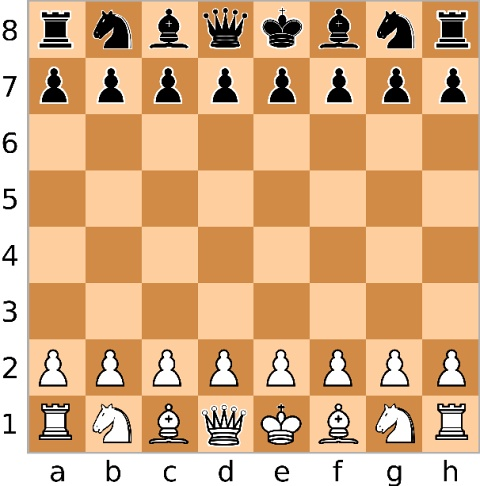
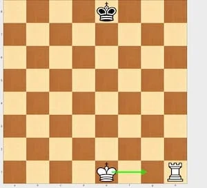
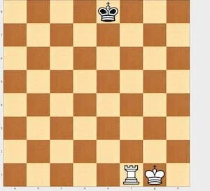
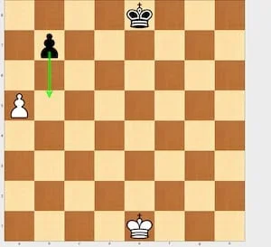
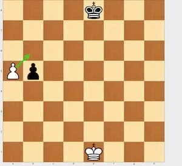
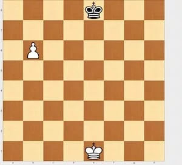
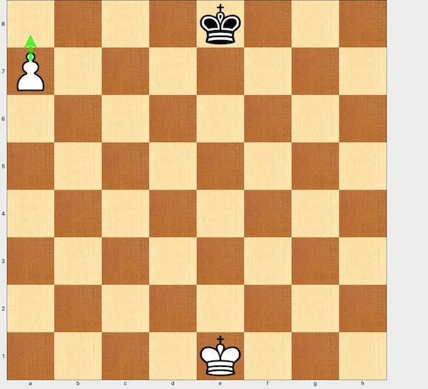

Objectif du Jeu
Le but des échecs est de mettre le roi de l'adversaire en situation d'échec et mat, ce qui signifie qu'il est attaqué et qu'il n'a aucune échappatoire possible. Les deux joueurs s'affrontent sur un plateau de 64 cases alternant entre clair et foncé.
Disposition Initiale
Au début de la partie, chaque joueur a 16 pièces :
- 1 Roi
- 1 Reine
- 2 Tours
- 2 Cavaliers
- 2 Fous
- 8 Pions
Les pièces sont placées sur les deux premières rangées de chaque camp, les pions occupant la deuxième rangée. Les tours occupent les coins, suivies des cavaliers, des fous, et enfin la reine et le roi (la reine sur la case de sa couleur).
Mouvements des Pièces
Chaque pièce se déplace selon des règles spécifiques :
- Pion : avance d'une case, ou de deux cases à son premier déplacement. Il capture en diagonale.
- Cavalier : se déplace en "L" : deux cases dans une direction et une case perpendiculaire.
- Tour : se déplace en ligne droite horizontalement ou verticalement.
- Fou : se déplace en diagonale sur une distance illimitée.
- Dame : peut se déplacer en ligne droite, horizontalement, verticalement ou en diagonale sur une distance illimitée.
- Roi : se déplace d'une case dans n'importe quelle direction.
Règles Spéciales
Il existe plusieurs règles spéciales qui ajoutent de la complexité au jeu :
- Le roque : un mouvement combiné entre le roi et une tour pour améliorer la sécurité du roi.
- La prise en passant : une règle spéciale pour capturer un pion qui avance de deux cases.
- La promotion : lorsqu'un pion atteint la dernière rangée, il peut être promu (souvent en dame).
Voici le roque :
 Voici la prise en passant :
  Voici la promotion :
